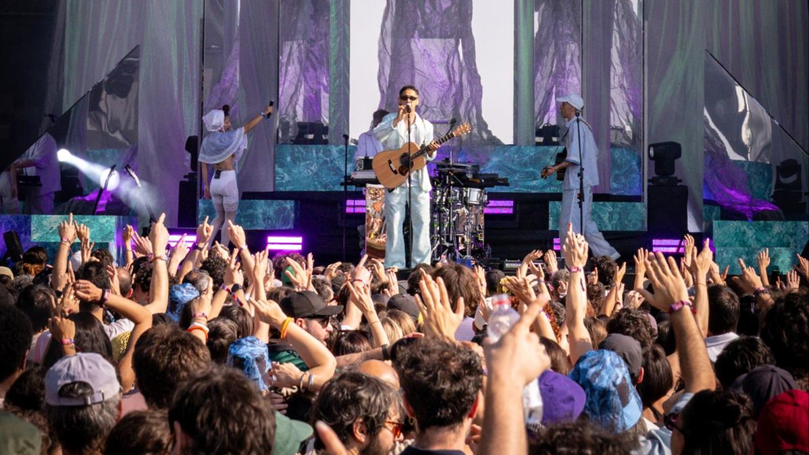
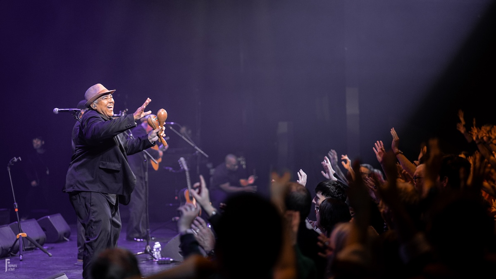
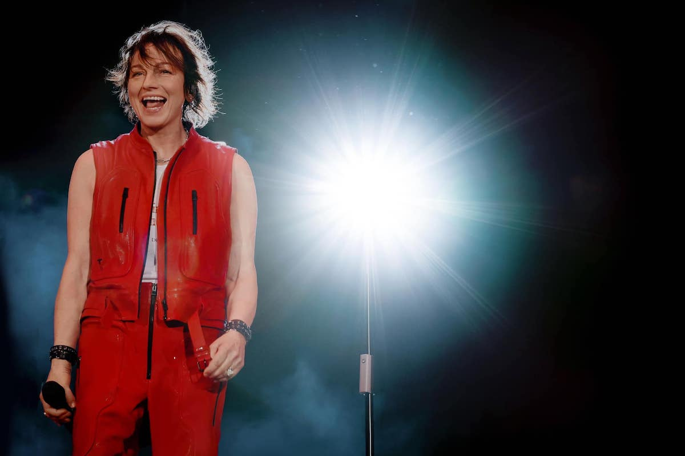
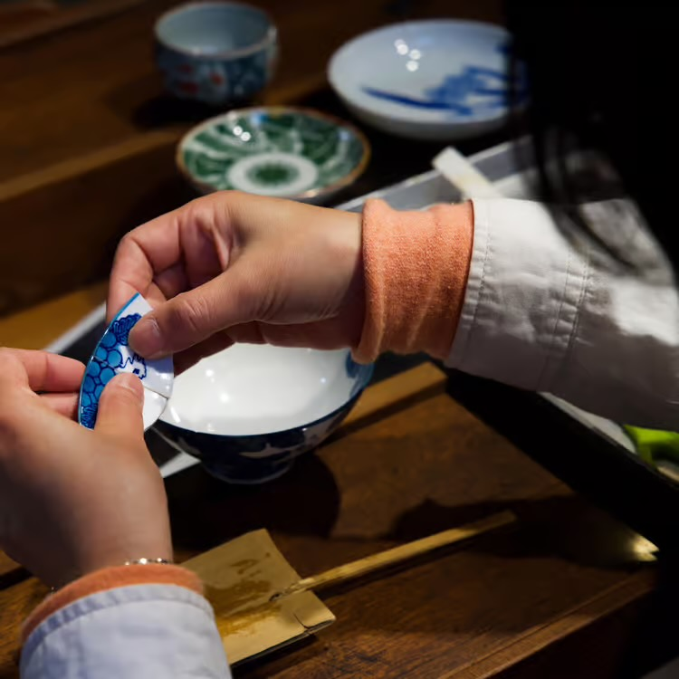
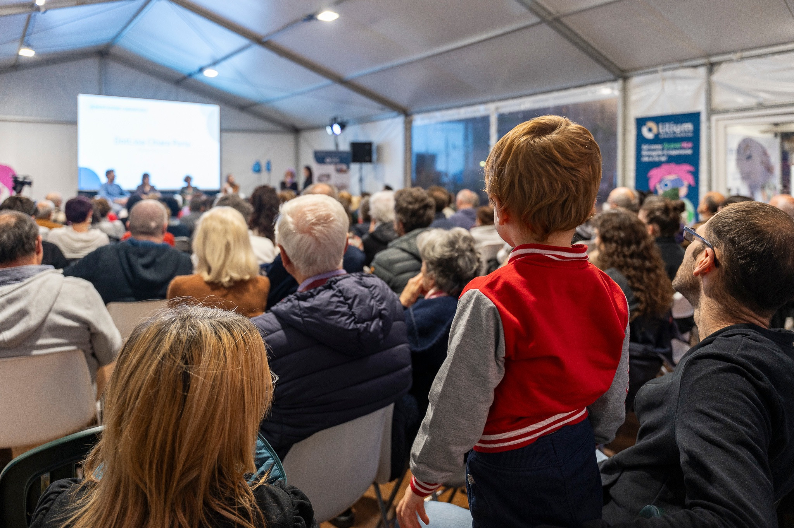
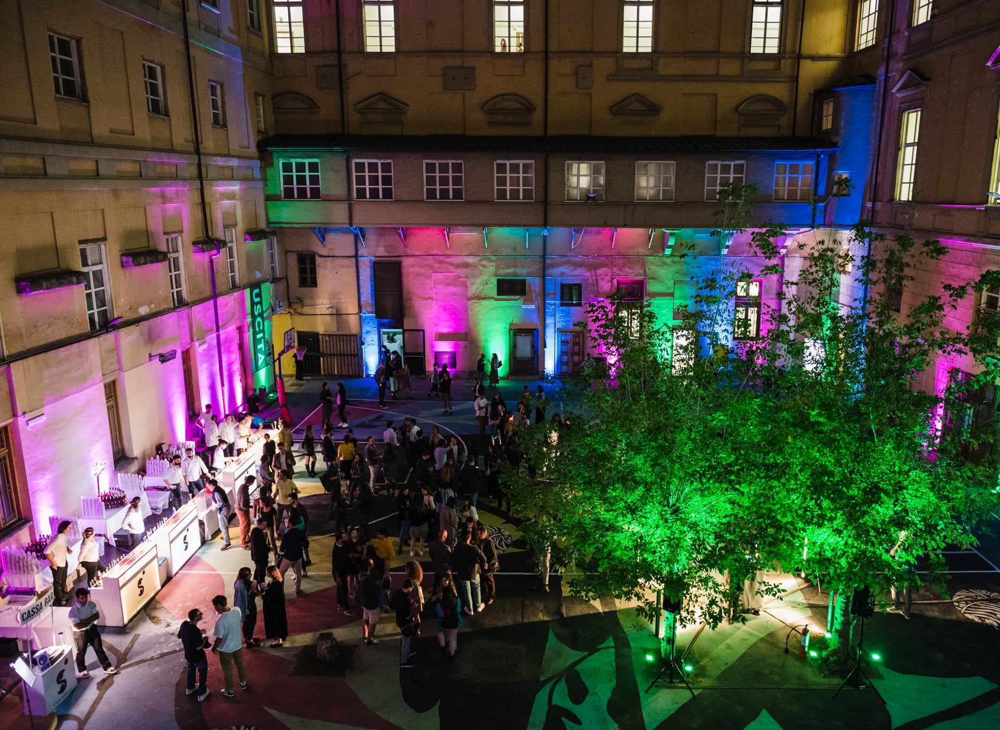
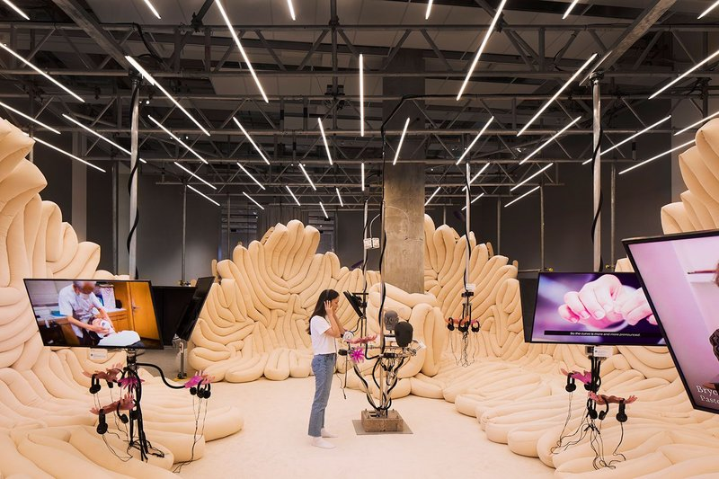
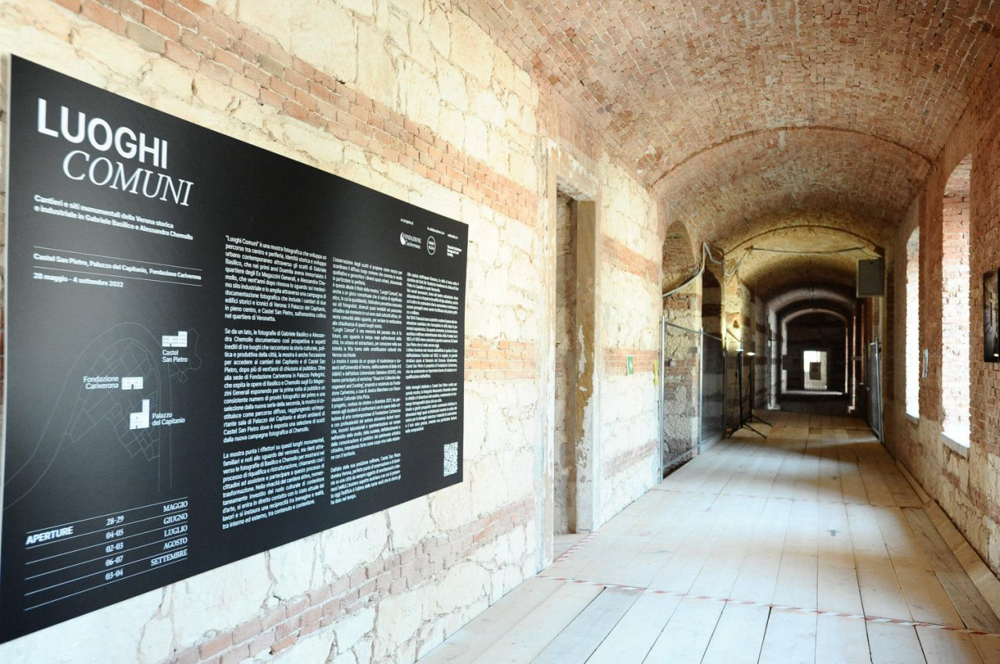

Lavori
I miei progetti.

Live & logistica eventi Cosmo · Matinée Tour 08 Cosmo · Matinée Tour Concerti alle 6 e 7 del mattino: un format fuori dagli schemi che richiede accoglienza a orari inconsueti e una logistica pensata per trasformare l'alba in un'esperienza unica. Apri progetto
Live & logistica eventi Grupo Compay Segundo 07 Grupo Compay Segundo L'autentico son cubano del Buena Vista Social Club, oggi guidato da Salvador Repilado Labrada. Per il Vívelo International Tour ho seguito logistica, on site e ospitalità della band. Apri progetto
live music e logistica Gianna Nannini · Sei Nell'Anima Tour 06 Gianna Nannini · Sei Nell'Anima Tour Coordinamento on site e gestione completa del rider hospitality per la data valdostana del tour di Gianna Nannini: catering, ristorante, backstage, camerini e assistenza durante l'evento. Apri progetto
Eventi & esperienze immersive Giornata del Giappone 05 Giornata del Giappone A partire dalla mostra “Eroi, evoluzione di un mito. Dal Giappone antico al contemporaneo”, ho costruito una giornata capace di attivare ogni spazio del Forte. Tutte le attività in sold out. Apri progetto
Eventi & digital education Villaggio della Salute 04 Villaggio della Salute “Genitori e figli nell'era dei social”: un incontro pubblico con le psicoterapeute di Spazio Ascolto, in cui ho rappresentato Involucra portando il punto di vista della comunicazione digitale. Apri progetto
comunicazione e eventi Una Notte al Museo 03 Una Notte al Museo 25+ aperture serali di musei e fondazioni in tutto il Nord Italia per un pubblico under 30. Strategia social, contenuti digitali e presenza in loco per il format “Una Notte al Museo”. Apri progetto
ricerca e marketing Il marketing esperienziale nei musei 02 Il marketing esperienziale nei musei Dalla desk analysis alla netnografia, fino alle interviste a chi i musei li vive e li dirige davvero: Rijksmuseum, MAO Torino, London Design Museum, TextielMuseum. Per restituire modelli e step operativi al management culturale. Apri progetto
Curatela & fotografia Luoghi Comuni 01 Luoghi Comuni Una mostra diffusa dedicata al rapporto tra fotografia e paesaggio, progettata collettivamente: dalla selezione e schedatura delle opere all'allestimento, dal testo curatoriale alla campagna di comunicazione. Apri progetto